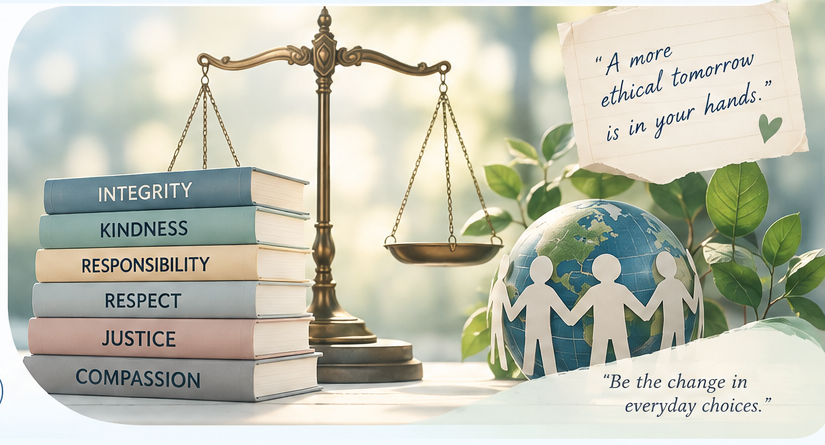

ETHIQ
Explore thought-provoking ethical questions, reflect on real-life situations, and choose what’s right — for a kinder, wiser tomorrow.

Explore by Category
Ethicards
About ETHIQ
Subject: OLVAL02 Ethics
Section: OLCA113N001
Professor: Ms. Angelica Ordanza
Group: 1
Year: 2026
Small Questions. A Bigger You.
ETHIQ is a digital ethics reflection card project created by Group 1 for OLVAL02 – Ethics. It is designed to encourage students to pause, reflect, and think critically about the moral choices they encounter in everyday life.
Through 180 reflection cards across six categories—Self, Relationships, Dilemma, Digital Life, Moral Compass, and Justice—ETHIQ presents questions that connect ethical concepts with real-life experiences.
Each card includes an English and Tagalog question, together with an inspirational message to encourage thoughtful reflection. Users can also record their answers and personal reflections as they explore different ethical situations.
Our Purpose
To create a simple and accessible digital space where students can think before they decide, reflect on their values, and understand how their choices affect themselves and others.
Credits
Developed by